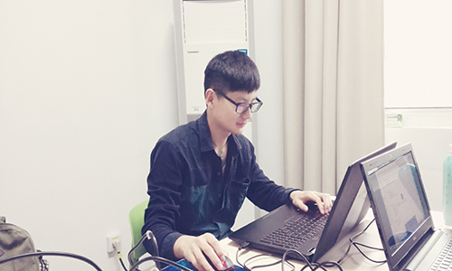

李埼耀（蓝色空间15级成员）
李埼耀，浙江湖州人，我校15级软件工程专业，课余时间喜欢打打乒乓球(欢迎大家去切磋球艺)。当然，编程也是我的最大的兴趣，在接下来的计划中打算学习算法知识，在这里呼吁有更多的算法大神能加入蓝色空间，和自己研讨算法，共同进步。在大一的学习中荣获优秀团员以及“蓝桥杯”省赛三等奖，也参加了ACM省赛，并一直努力着继续创造佳绩。。
李埼耀，浙江湖州人，我校15级软件工程专业，课余时间喜欢打打乒乓球(欢迎大家去切磋球艺)。当然，编程也是我的最大的兴趣，在接下来的计划中打算学习算法知识，在这里呼吁有更多的算法大神能加入蓝色空间，和自己研讨算法，共同进步。在大一的学习中荣获优秀团员以及“蓝桥杯”省赛三等奖，也参加了ACM省赛，并一直努力着继续创造佳绩。。